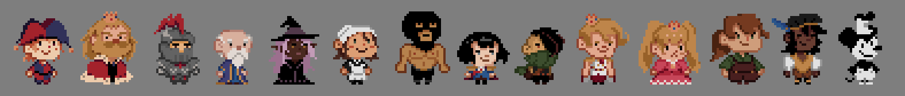
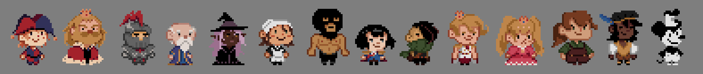

Deck-building Game
Project information
- Category: Freelance Work
- Project date: January 2024
- Team: 3 People
- Role: Lead UI Designer, Illustrator
- Tools: Aesprite
- Project URL: Game Website
Navigation

About
During the six-day 2024 Vancouver Global Game Jam, two friends and I collaborated on creating a project together. The theme for this year's jam was "Make Me Laugh," which inspired us to develop a deck-building game centered around playing as Jerry the jester, whose goal is to entertain the king's court. To do this the player uses joke cards of various elements which can either provoke a positive or negative response from the court members depending on their sense of humor. If court morale is too low, the player loses.


Given the time constraints, we embraced a rough-and-ready approach, considering our busy schedules of currently taking classes and working. With further development we would like to expand upon the game focusing on balancing the gameplay and refining aesthetics.
My Role
In the project, I took on the responsibility of creating a majority of the game's interface and 2D visuals. This encompassed designing the card layouts and illustrations, crafting overworld character designs and textures. As well as creating various assets, such as the game's logo.
Milestones
Card Design Layouts
Initially, all cards of the same joke type were intended to share the same visual. However, as development progressed, the complexity of the cards grew. Cards gained additional elements such as joke range, cooldown, and strength. Likewise, cards now could be two different types at once. While keeping this in mind, I made sure all visuals were readable and incorporated distinct colours depending on their types.


Joke Elements
Before when cards were not going to have unique art, cards of the same type shared a common image depicting a facial expression corresponding to the represented element. This later changed into identifiable icons.
When creating multitype cards, their background color consists of their primary type with its colors from its secondary type integrated into the card’s art. These colours have been tested together in accommodation to colorblindness (protanomaly, deuteranomaly, tritanomaly).


Character Sprites
In the game, 2D characters navigate a 3D environment. I drew quick sketches of the characters based on short descriptions written by a teammate, which were then animated to create simple walking sprites.
 

Environment
A rough sketch was created of the game’s interface of what it could look like in action. During development, there were debates of if the cards should be visible on the bottom or right of the screen. I recommended that due to the card’s elements being integral to the game, they would be most visible across the bottom of the screen.
I also created the textures for the environment, including stone floors, wooden tables, carpet, and metal surfaces that were applied to the 3D models.


Card Illustrations
With the limited timeframe I thought that adapting a simplistic meme-like style in the card art would be great to amplify their comedic effect. In a similar vein, to save time some cards are re-colored versions of other cards with different background patterns and slight expression changes.


{kind=link}
Challenges
The main challenge we encountered was the limited time available to complete the project. This led to some instances of miscommunication regarding the types of certain cards, resulting in some colour inconsistencies of their card art. In the future this could be avoided by making the information clearer on our design document such as color-coding each element type.
Other Projects

Website Development
UX/UI Design

Visual Novel Game
Illustration, Concept Design
Artwork
Illustration